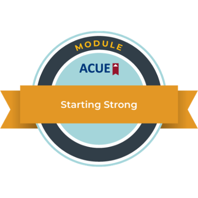
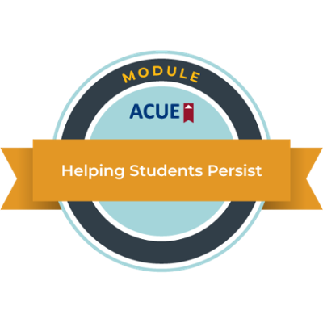
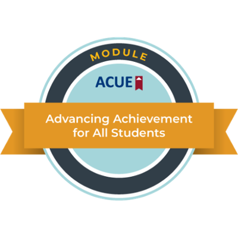

Haiming (Richard) Li
Ph.D. Candidate in Business and Economics · Lehigh University
Courses
| Course | Role | Term |
|---|---|---|
| Lehigh University | ||
| ECO 301/403 Econometric Software | Adjunct Professor | Spring 2027 (scheduled) |
| ECO 146 Intermediate Microeconomic Analysis | Adjunct Professor | Summer 2026 |
| ECO 001 Principles of Economics | Teaching Assistant | 2022-2024, Fall 2026 |
| ECO 045 Statistical Methods | Teaching Assistant | Winter 2026 |
| FIN 125 Introduction to Finance | Teaching Assistant | 2024-2025 |
| Moravian University | ||
| HHUM 125 Introduction to Health Humanities | Guest Lecturer | February 2026 |
Student Evaluations
Spring 2025FIN 125Teaching Assistant4.484.38
Spring 2024ECO 001Teaching Assistant4.614.31
Fall 2022ECO 001Teaching Assistant4.544.39
Selected terms. Click a teaching assistant term to see each question. Ratings are the average of the six standard Lehigh evaluation questions on a scale of 1 to 5. Lehigh is the university-wide average on the same evaluation form in the same term, computed the same way. Full evaluations are available on request.
What Students Say
"Richard genuinely seems like he cares about all the kids in our class and how well we do in the class. He even knows all of our names which a lot of TAs don't know."
ECO 001, Fall 2022
"He ties all the topics together with graphs and visuals, which allows the students to not just understand the current subject but an overall understanding of how everything in finance is tied together. ... Whenever a student is confused, he tries to explain the topic in another way until he guarantees the students fully comprehend it."
FIN 125, Spring 2025
"When you made us answer a question it helped me understand the concept even more even if I got it wrong you explained it and it helped."
ECO 001, Spring 2023
"The live recorded lectures were very clear and I feel like I was able to learn everything I needed to as if it was an in person class."
ECO 146, Summer 2026
"Haiming Li was a great TA, and made many of the concepts in economics easy to understand with real world examples. He was also very interactive, which made his recitation easy to follow."
ECO 001, Fall 2022
"Richard always tries to go above and beyond with helping students and explains the course content very well. He also tries to ensure student's success by taking time to give good examples or practice problems."
ECO 001, Spring 2024
"My TA was very respectful and engaging. When I wanted to go over my exam, he made time that exact day and he helped me realize my errors."
FIN 125, Fall 2024
Approach
Students should try a problem before they see the answer, and I should find out early when something is not working. In ECO 146, every class ended with a short exercise that students answered before I showed a solution, worked examples gave way to independent problem solving, and each core skill came back several times in new settings. Leading recitations in principles of economics and introduction to finance taught me that students get stuck in different places in different courses, and I rebuilt my materials to match.
Course Materials
Samples from ECO 146, Intermediate Microeconomic Analysis, which I taught as an Adjunct Professor in Summer 2026.
- Syllabus Course objectives, grading, and policies.
- Course roadmap The six-week schedule on one page, with every assignment, quiz, and exam.
- In-class exercise, Class 2 The end-of-class exercise described above, with answers and feedback, including the $12 sandwich question.
- Math toolkit A four-page formula sheet I wrote so students could review the algebra and calculus the course uses.
Professional Development
  
This fall I am in the AI Innovator Track of Lehigh's Strategic Methods for AI-Responsive Teaching (SMART) program, where I am designing, using, and evaluating an AI-related resource for an economics course.
I earned the Bloomberg Market Concepts (BMC) certificate from Bloomberg for Education in 2026.
Mentoring and Service
- Graduate Orientation Ambassador, College of Business, Lehigh University, 2025 and 2026
- President, Lehigh University Chinese Christian Fellowship, 2023 to present. I led the group's recruitment at the university student organization expo from 2023 to 2025 and organized Mid-Autumn Festival and Lunar New Year events.
- Referee, Journal of Mental Health Policy and Economics, 2026
In a department, I would like to take part in the work that shapes what students leave with: keeping the curriculum current, advising students on course choices and careers, and helping them find a first research or internship opportunity.
Teaching Interests
Principles of Microeconomics and Macroeconomics; Intermediate Microeconomics; Statistics and Applied Econometrics; Econometric Software; Health Economics; Introduction to Finance; data analysis with Stata, R, and Python.